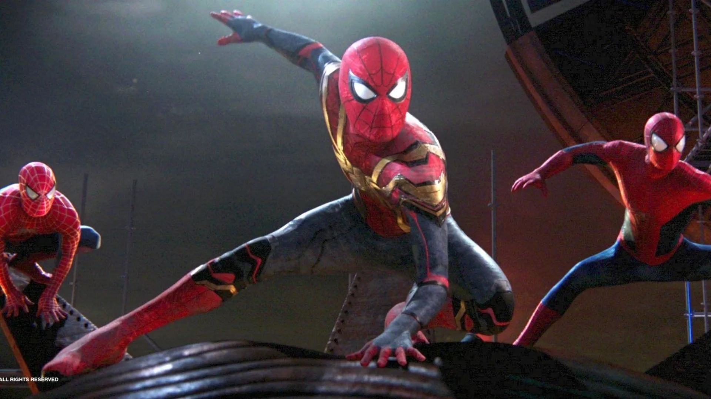

Tudo Sobre os FIlmes do Homem-Aranha
Introdução
Homem-Aranha é uma série de filmes e uma franquia de mídia norte-americana baseado no personagem homônimo da Marvel Comics criado por Stan Lee e Steve Ditko. Homem-Aranha é o alter ego de Peter Parker, um talentoso jovem fotógrafo freelancer e aspirante cientista, que ganhou habilidades sobre-humanas depois de ser mordido por uma aranha radioativa/geneticamente alterada. Os filmes solo do Homem-Aranha realizados a partir de 2002 - dez no total - são distribuídos e produzidos pela Sony Pictures, que adquiriu os direitos cinematográficos do personagem e seus derivados em 1999 por US$ 7 milhões.
Origem
A trajetória do Homem-Aranha em live-action começou oficialmente em 1974, no quadro Spidey Super Stories, do programa The Electric Company, com Danny Seagren no papel. Antes disso, houve um curta de fã em 1969, considerado a primeira adaptação live-action não oficial. Depois vieram o telefilme The Amazing Spider-Man (1977), com Nicholas Hammond, e mais dois telefilmes derivados em 1978 e 1979. No Japão, a Marvel se uniu à Toei para criar o tokusatsu Spider-Man (1978), com 41 episódios e um filme derivado. Mais tarde, os direitos cinematográficos passaram por vários estúdios até chegarem à Sony, que lançou a trilogia de Sam Raimi com Tobey Maguire entre 2002 e 2007. Um quarto filme e outros projetos foram planejados, mas acabaram cancelados.
Evolução
Em 2010, a franquia foi reiniciada com Andrew Garfield em The Amazing Spider-Man (2012) e sua sequência em 2014, mas essa fase também teve vários projetos cancelados. Em 2015, Sony e Disney firmaram acordo para integrar o herói ao Universo Cinematográfico Marvel, trazendo Tom Holland como uma nova versão de Peter Parker, presente em filmes dos Vingadores e em sua própria trilogia entre 2017 e 2021. Paralelamente, a animação Spider-Man: Into the Spider-Verse (2018) e sua sequência de 2023 expandiram ainda mais a franquia. A Sony também desenvolveu o chamado Universo Homem-Aranha da Sony, com filmes de personagens ligados ao herói, como Venom, Morbius, Madame Teia e Kraven.
No total, os filmes do Homem-Aranha formam uma das franquias de maior bilheteria da história, arrecadando mais de US$ 11,1 bilhões, com Spider-Man: No Way Home sendo o maior sucesso.

Legado
Ao longo das décadas, o Homem-Aranha se consolidou como uma das franquias mais importantes da cultura pop, expandindo sua presença para além do cinema e da televisão, chegando também aos jogos, animações e produções derivadas. Esse sucesso mostra como o personagem conseguiu se reinventar em diferentes épocas e estilos, mantendo sua popularidade entre várias gerações e se tornando um dos heróis mais marcantes e lucrativos da história do entretenimento.